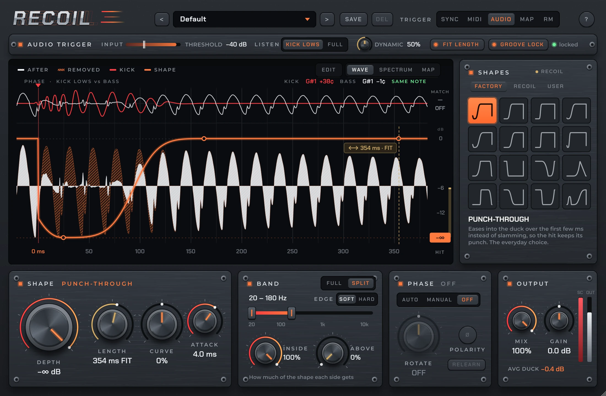
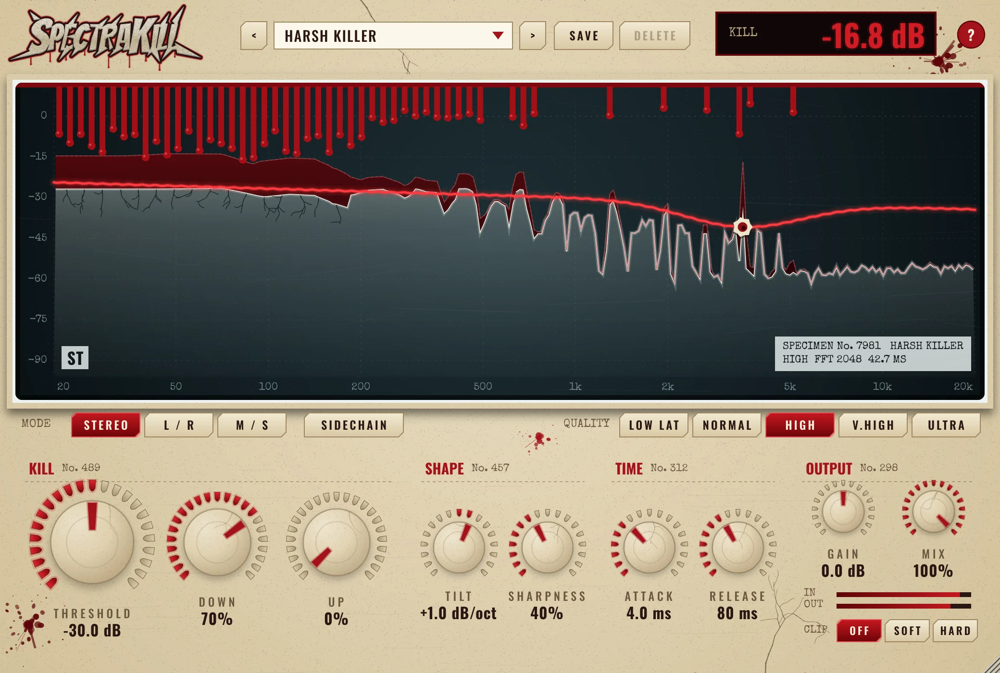
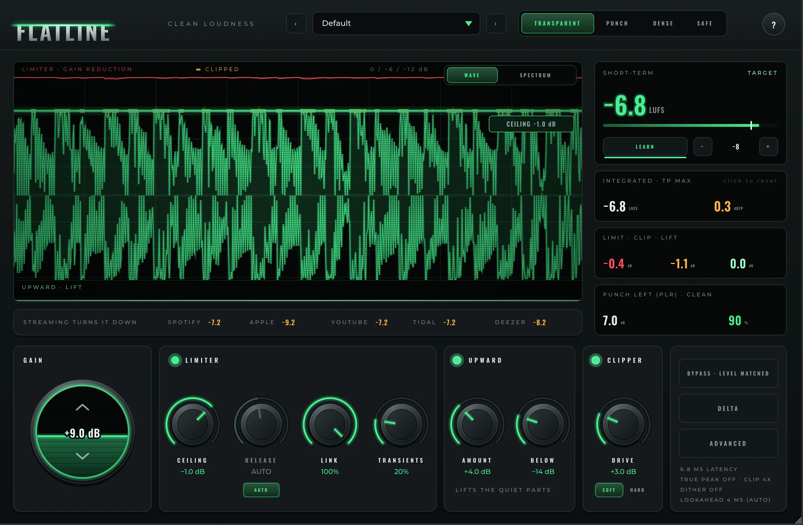

Harmonic loudness
Soft clipper
Shave the peaks off drums, buses and masters so everything sits louder without pumping. The CLIP dial goes from 0 to 11, and the display shows every sample it cuts in red.
Free · Windows: .zip with the VST3 and the app · macOS: installer with AU, VST3 and the app, for Apple Silicon and Intel
User manual (PDF) Want them all? Get the full suite of 10
Hear it
Same clips on every plugin page. The level change is real here, since loudness is what it's for; tick Match loudness to compare at equal volume.
Overview
PEAKSLAYER is a clipper. It cuts off the tallest peaks of a sound so you can turn the whole thing up without it going over 0 dB. Unlike a compressor or limiter, a clipper has no attack or release: it acts on each sample instantly, so it never pumps or breathes, and drums keep their snap.
Turn up CLIP and PEAKSLAYER drives the sound into a ceiling at −0.1 dBFS. SHAPE decides how the peaks are rounded off, from a soft, warm knee to a hard, flat cut. The display shows the waveform with every clipped sample marked in red, so you can see exactly how much you are taking off.
Good for
Quick start
Reference
How hard the sound is pushed into the ceiling at −0.1 dBFS. 0 is no drive; 11 is about 15 dB of drive. The red marks on the waveform show what is cut.
The knee of the clipper. Left rounds the peaks off gently and adds warmth, the centre is matched, right cuts them flat for the most transparent loudness.
Runs the clipper at 4× the sample rate to cut the harsh, fizzy aliasing that clipping adds to the highs. Uses more CPU and adds a few samples of latency, which your DAW compensates for.
A final hard limit at 0 dB after the OUTPUT knob. Use it when part of the signal skips the clipper (clip band, or MIX below 100%) and peaks could go over.
Level going into the clipper. Works together with CLIP.
Final level after the clipper.
Blends the clipped signal with the untouched input. Below 100% the output can go above the ceiling.
Two handles: only the frequencies between them are clipped. Raise the left one to keep the sub clean, lower the right one to keep the highs clean. Unclipped parts can go over the ceiling, so lower OUTPUT or turn on SAFE.
Scrolling waveform with the ceiling line. Samples that get clipped are drawn in red; the SLAYING light shows when clipping happens.
Peak meters for the input and output.
Average loudness of the output, so you can see how much louder the clipping makes it.
Every plugin window scales from 60% to 200%: drag the bottom-right corner. Double-click a knob to return it to its default.
Presets
Click SAVE to store your own. They are kept in %APPDATA%\PeakSlayer\Presets on Windows and ~/Library/Application Support/PeakSlayer/Presets on a Mac, so you can back them up or share them.
Tips
Install
Open the downloaded .zip. Inside is the plugin (.vst3) and a standalone app.
Move the .vst3 to C:\Program Files\Common Files\VST3. Every Windows DAW looks there.
Let your DAW scan for new plugins. The plugin shows up under Noise Division.
Windows 10 or 11, 64-bit. VST3 host or the standalone app.
Double-click the .pkg. It installs the Audio Unit, the VST3 and the standalone app.
Open System Settings, Privacy & Security, scroll down and click Open Anyway. This shows once, because the installers aren't from the App Store.
Logic and GarageBand find the AU on their next start. Ableton Live, FL Studio, Reaper, Bitwig and Studio One use the VST3.
macOS 10.13 or newer, Apple Silicon or Intel. AU or VST3 host, or the standalone app.
Installation, every control, presets, tips and troubleshooting in one PDF to keep next to your DAW.
Help
The clip band or MIX below 100% lets unclipped sound through. Lower OUTPUT or turn on SAFE.
HQ adds a few samples of delay. Turn it off for zero latency while recording.
Check the .vst3 is in C:\Program Files\Common Files\VST3 (Windows) and rescan. On a Mac, run the installer again and restart the DAW.
Rescan with Verify plugins ticked in the plugin manager.
System Settings, Privacy & Security, Open Anyway. The installers aren't signed with an Apple developer certificate yet.
Click More info, then Run anyway. This only concerns the standalone app.
Drag the bottom-right corner. Every plugin scales from 60% to 200% and remembers the size.
E-mail noisedivision@proton.me with the plugin name, version, your DAW and your operating system.
More from Noise Division
Harmonic loudness

Multiband distortion

Spectral distortion

One-knob darkener

Precision sidechain

Spectral compressor
Section-aware match EQ

One-knob mastering

Clean loudness
Support
Everything here is free and stays free. If a plugin made it into your tracks and you want to say thanks, a donation pays for the time that goes into new plugins and updates.